地政学
タシュケントは中央アジアの内陸回廊、ロシア、中国、トルコ、湾岸、南アジアを結ぶ外交の接点です。政府、省庁、大使館、鉄道、空港が集まり、地域協力と国境管理、エネルギー、移民労働の課題を扱います。水も鍵です。
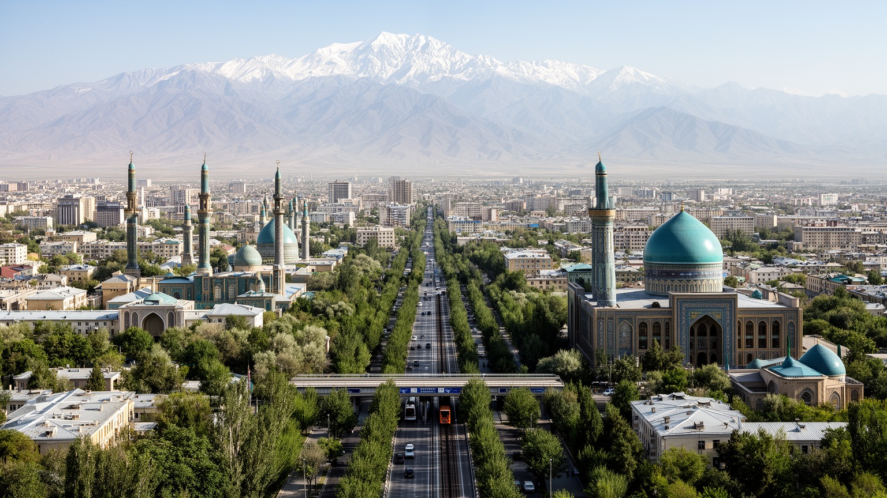
🇺🇿 ウズベキスタン / 首都タシュケント / World City Atlas
中央アジア最大級の首都です。シルクロードの記憶、ロシア帝国とソ連の都市計画、独立後の国家建設、地下鉄、バザール、金融、製造、イスラム文化、新しい住宅開発が重なります。
中央アジアの首都
タシュケントは、チルチク川流域のオアシス都市から、ロシア帝国の行政拠点、ソ連の大都市、独立ウズベキスタンの首都へ変わりました。鉄道、空港、地下鉄、バザール、大学、官庁が、内陸アジアの動きを受け止めます。
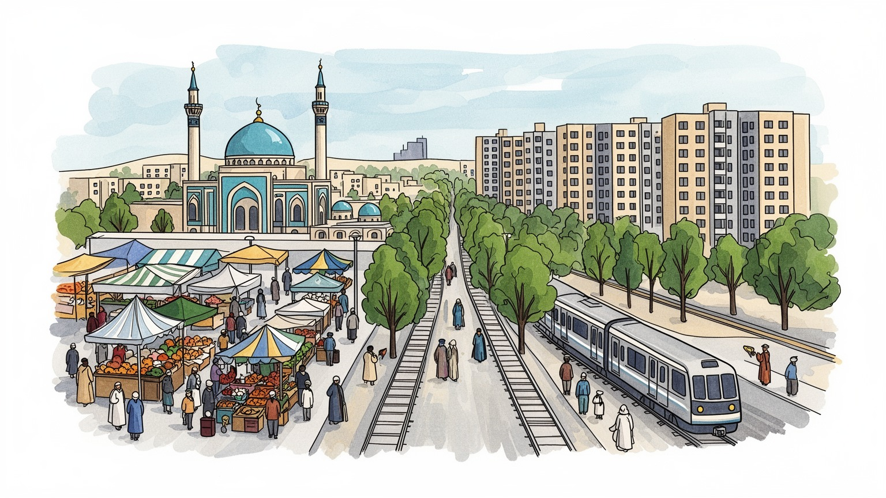
タシュケントは中央アジアの内陸回廊、ロシア、中国、トルコ、湾岸、南アジアを結ぶ外交の接点です。政府、省庁、大使館、鉄道、空港が集まり、地域協力と国境管理、エネルギー、移民労働の課題を扱います。水も鍵です。
雇用は行政、金融、通信、建設、食品、繊維、機械、商業、物流、教育、医療に広がります。民間投資と国有企業、バザールの小商い、若い専門職が同じ都市経済を動かし、賃金と住宅費の差も目立ちます。技能も問われます。
イスラムの学問、ソ連期の多民族社会、ウズベク語とロシア語、劇場、音楽、食文化が重なります。モスク、マドラサ、正教会、記念碑、地下鉄駅の装飾が、都市の記憶を静かに語ります。祝祭も街を彩ります。記憶も鍵です。
住民は地下鉄、バス、タクシー、広い道路、近所の市場を使い分けます。旅ではハスト・イモム、チョルスー・バザール、地下鉄駅、博物館、劇場、新旧の公園を巡り、首都の変化を歩いて感じますよ。暑さ対策も大切です。
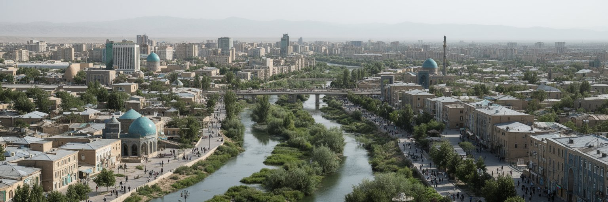
タシュケントは、乾いた中央アジアの中で水と交通が交わる場所に育った都市です。チルチク川と灌漑の水、ティエンシャン山脈の雪解け、フェルガナ盆地やシムケント方面へ続く道が、古くから市場と定住を支えてきました。都市名は「石の町」と説明されることが多く、シルクロードの隊商路、農産物、職人、宗教者、旅人が行き交う結節点として知られました。現代のタシュケントは海から遠い内陸首都ですが、空港、鉄道、道路、地下鉄、バスターミナルを通じて地域の距離を縮めています。カザフスタン、キルギス、タジキスタン、アフガニスタン、ロシア、中国、トルコ、湾岸諸国との人と物の流れは、首都の政策と市場価格に表れます。水が限られる地域で都市が拡大するほど、緑地、給水、排水、暑熱対策、農地との関係は重要になります。大通りの近代的な風景の背後には、オアシス都市として水を配り、交通を受け止めてきた長い歴史があります。タシュケントを読む時は、地図上の首都記号だけでなく、山麓の水、国境への道、旧市街の市場、郊外の住宅地を一続きで見る必要があります。内陸であることは孤立ではなく、複数の方向へ開く条件でもあります。その接続をどう公平な生活へ変えるかが、都市の現在の焦点です。山から来る水路と国境へ向かう道路が、住民の日常と国家の戦略を同じ場所で結んでいます。
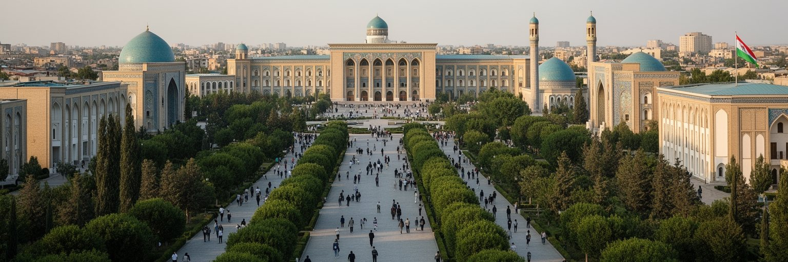
タシュケントは独立ウズベキスタンの政治中枢です。大統領府、議会、省庁、最高裁、各国大使館、国際機関、国有企業、大学、報道機関が集まり、国家運営の多くがこの都市で決まります。中央アジアはロシア、中国、トルコ、欧州、米国、湾岸諸国、南アジアの関心が交差する地域であり、タシュケントの外交は安全保障、エネルギー、鉱物、鉄道、労働移動、水資源、国境管理を同時に扱います。ウズベキスタンは周辺すべての中央アジア諸国と国境を接し、アフガニスタンとも向き合うため、首都の判断は地域秩序に影響します。独立後の国家建設では、ウズベク語、国旗、記念碑、公共空間、教育制度、宗教政策が再編されました。一方、ソ連期から続く行政慣行、ロシア語の実用性、国有部門の重さも残ります。政治都市としてのタシュケントを見る時、広場や官庁だけでなく、住民登録、学校、医療、交通、建設許可、住宅移転に国家がどう関わるかを見ます。改革が進むほど、市民にとっては手続きの透明性、司法の信頼、報道の自由、地方との均衡が大切になります。首都は国の顔であるだけでなく、国家が日常生活に触れる最前線です。外交会議の言葉は遠く見えても、通貨、雇用、送金、輸入品価格、都市開発として住民に届きます。地方都市との距離を縮める政策も、首都の成熟を測る重要な条件です。
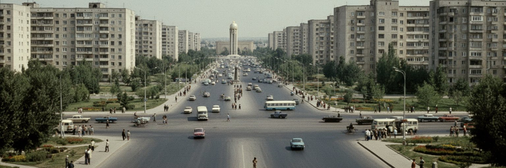
タシュケントの都市景観を大きく変えた出来事が、一九六六年の大地震です。旧市街の多くが被害を受け、ソ連各地から労働者、技術者、建築家が集まって再建が進みました。広い大通り、集合住宅、公共建築、公園、記念碑、地下鉄計画は、災害復興であると同時に、ソ連的な近代都市を中央アジアに示す事業でした。地震後の再建は、住宅供給と都市インフラを大きく改善しましたが、古いマハッラの細かな路地や生活の記憶を失わせた面もあります。タシュケントには、帝政ロシア期の新市街、ソ連期の計画都市、独立後の新しい官庁街や商業施設、旧市街の宗教空間が層のように重なります。集合住宅の中庭、並木道、劇場、百貨店、記念碑は、ソ連の日常を今も都市の骨格として残しています。一方で、建物の老朽化、耐震性、冷暖房、エレベーター、公共空間の維持は現代の焦点です。新しい高層住宅や再開発が進むと、古い低層地区や中庭の共同性が消えることもあります。タシュケントの近代性は、単に新しいビルの多さではありません。災害の後に国中の労働で築かれた都市を、独立後の価値観と市場経済の中でどう更新するかにあります。大通りの整然さと旧市街の親密さをどちらも都市の財産として扱えるかが、記憶の継承を左右します。地震の記憶は、防災と都市計画を考える現在の住民にも静かにつながっています。
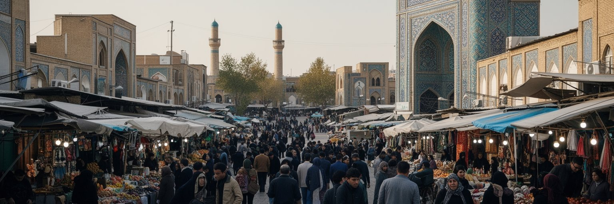
タシュケントの経済を身体で感じる場所は、チョルスー・バザールをはじめとする市場です。果物、野菜、ナン、香辛料、肉、乳製品、乾果、布、日用品、携帯電話、修理、屋台が密集し、地方から届く農産物と輸入品が首都の家計を支えます。市場は買い物の場であるだけでなく、価格情報、仕事の紹介、親族や出身地のネットワーク、言語の切り替えが交わる公共空間です。ナンを焼く匂い、プロフの湯気、売り手の声、SNSで広がる店の評判も、商いのリズムを作ります。近代的なショッピングモールやオンライン商取引が広がっても、バザールは食品の鮮度、交渉、少量購入、近所の信頼によって強い役割を持ち続けます。都市経済は行政、金融、通信、建設、製造、教育、医療、観光へ広がりますが、多くの住民にとって日々の現金収入は小売、配送、飲食、修理、家事労働、タクシーなど細かな仕事に支えられます。若い人口が増え、大学卒業者が増える中で、安定した雇用と技能形成は大きな焦点です。民間投資の増加は新しい専門職を生みますが、住宅費や物価が上がれば、低所得者の暮らしは苦しくなります。タシュケントの市場を見ると、国家主導の改革と庶民の商いが同じ都市を動かしていることが分かります。バザールの活力を守るには、衛生、交通、保管、日陰、火災対策、出店者の権利が必要です。朝の値段交渉にも都市の景気が映ります。
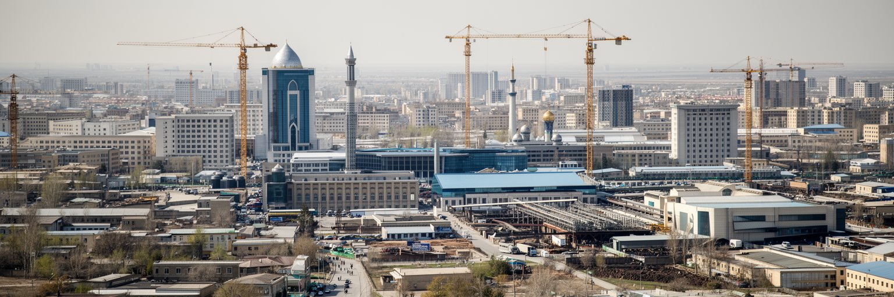
タシュケントは、ウズベキスタン経済の政策、資本、人材が集まる都市です。銀行、通信、IT、保険、行政サービス、建設、不動産、食品加工、繊維、機械、電気製品、印刷、教育、医療、物流が、首都の雇用を厚くしています。国の経済は金、銅、天然ガス、綿花、繊維、農業、移民送金、サービスに支えられますが、本社機能、規制、投資交渉、金融サービスはタシュケントに集中しやすいです。近年は民営化、外資誘致、為替改革、観光開放、国際会議、インフラ投資が進み、都市の建設現場とオフィス街に変化が表れています。ただし、成長の利益が均等に広がるとは限りません。高技能の若者や外国語を使える専門職には機会が増える一方、低賃金のサービス労働、非公式雇用、建設現場の安全、女性の就業、地方出身者の住まいは焦点です。産業都市としてのタシュケントを読むには、ビジネスセンターだけでなく、工場の通勤、倉庫、夜間の配送、職業訓練校、バザールの卸売、国有企業の改革を見る必要があります。経済改革は数字ではなく、給与、契約、住宅ローン、起業手続き、労働者の安全として住民に届きます。都市が投資を呼び込むほど、透明なルール、環境基準、公共交通、教育の質が重要になります。タシュケントの競争力は、資本を集める力だけでなく、働く人が技能を伸ばし、家族を支えられる都市であるかにかかっています。
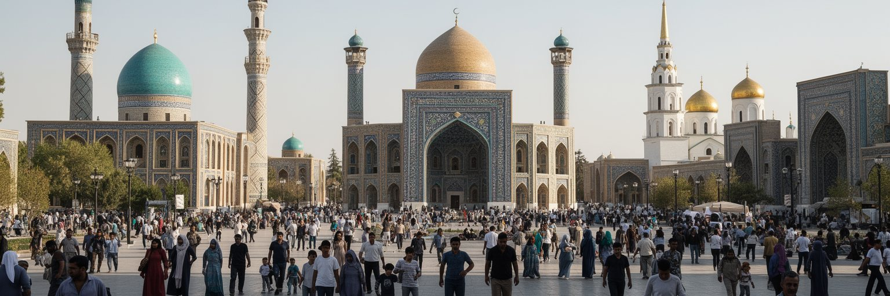
タシュケントはイスラム文化の都市であると同時に、ソ連期から続く多民族都市でもあります。ハスト・イモム周辺にはモスク、マドラサ、霊廟、写本に関わる記憶が集まり、金曜礼拝、ラマダン、犠牲祭、家族行事が日常の時間を刻みます。旧市街のマハッラでは、近所の互助、結婚式、葬儀、食事、挨拶、年長者への敬意が社会を支えています。一方、タシュケントにはロシア人、タタール人、朝鮮系住民、タジク人、カザフ人、ユダヤ系、その他の背景を持つ人々も暮らし、ロシア語は今も教育、商業、行政、専門職で広く使われます。正教会、劇場、ソ連記念碑、ロシア語学校、韓国系の食文化は、都市の多層性を示します。独立後はウズベク語と国家文化の位置づけが強まりましたが、多言語性は首都の実用的な力でもあります。宗教は公共生活の重要な基盤ですが、国家は世俗性と宗教管理のバランスを取り続けています。信仰を尊重しながら、教育、女性の権利、若者の表現、宗教的多様性をどう扱うかは都市の成熟に関わります。タシュケントの文化は、観光名所の装飾だけではなく、ナンを分ける食卓、結婚式の音楽、地下鉄で聞こえる言語、学校の友人関係にあります。多民族性は過去の遺産であり、現在の都市生活を滑らかにする技術でもあります。違う言葉で同じ市場を使う経験が、首都の日常を支えています。
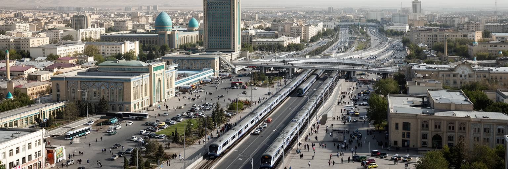
タシュケントの交通を象徴するのは、一九七七年に開業した中央アジア初の地下鉄です。駅ごとに異なるモザイク、照明、柱、宇宙、詩人、歴史を題材にした装飾があり、単なる移動手段を超えて都市の記憶を運んでいます。地下鉄は広い道路と暑い夏の中で、住民が涼しく確実に移動できる重要な公共交通です。近年は路線延伸や駅の追加が進み、郊外化する住宅地と中心部を結ぶ役割が増しています。タシュケントは鉄道都市でもあります。国内のサマルカンド、ブハラ、アンディジャン方面、国境を越える貨物、空港からの国際便が、内陸国の首都を外部世界へつなぎます。海港を持たないウズベキスタンでは、鉄道、道路、航空、物流倉庫の信頼性が、輸入品価格、輸出、観光、移民労働に大きく影響します。市内ではバス、タクシー、配車アプリ、徒歩が地下鉄を補いますが、渋滞、大気汚染、歩行者の安全、夏の暑さ、道路横断のしにくさは焦点です。交通計画は、車の流れを速くするだけでは十分ではありません。駅周辺に歩きやすい道、日陰、乗り換え、商店、住宅を整えることで、公共交通は生活の骨格になります。タシュケントの地下鉄は美しい観光資源であると同時に、内陸首都が成長を持続させるための実務的なインフラです。駅の装飾を見る旅は、都市の移動を支える労働と公共性を見る旅でもあります。
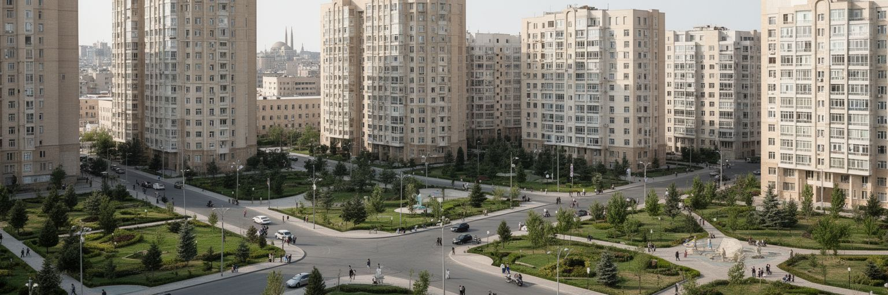
タシュケントは人口増加と投資の集中により、住宅と土地利用が大きく変わっています。中心部では高層住宅、商業施設、ホテル、ビジネス地区が増え、郊外では新しい集合住宅地や道路が広がります。さらに新タシュケント構想は、行政機能、住宅、公園、教育施設、交通を含む大規模な都市拡張として進められています。成長は住宅供給を増やし、建設雇用を生み、都市の国際的な印象を強めますが、同時に古いマハッラの取り壊し、補償、移転、家賃上昇、交通負荷、緑地の減少をめぐる不安も生みます。タシュケントの住まいは、ソ連期の集合住宅、旧市街の低層住宅、中庭を持つ家、新しい高層マンション、郊外の戸建てが混在します。家族規模が大きく、親族との近さを重視する世帯にとって、単に床面積を増やすだけでは暮らしやすさは測れません。学校、診療所、市場、地下鉄駅、日陰のある歩道、遊び場、礼拝施設への距離が、住まいの質を決めます。都市開発が速いほど、住民参加と情報公開は重要になります。美しい完成予想図だけでなく、誰が移転し、誰が新しい住宅を買え、誰が長い通勤を引き受けるのかを見なければなりません。タシュケントの未来は、新しい地区の規模よりも、古い近所の記憶と若い世帯の住まいをどう両立させるかに表れます。住まいは投資商品である前に、都市の信頼を支える生活基盤です。
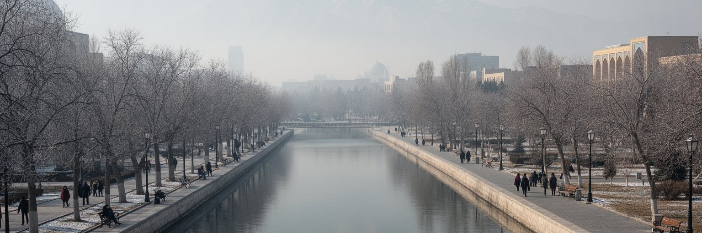
タシュケントの快適さは、水と緑に大きく支えられています。中央アジアの乾いた気候の中で、運河、灌漑、街路樹、公園、中庭の木陰は、夏の暑さを和らげ、住民の移動と休息を助けます。ソ連期から続く広い並木道は都市の大切な財産ですが、建設や道路拡幅で木が失われると、暑熱、ほこり、歩きにくさがすぐに増します。水資源は地域全体の政治にも関わります。山岳部から流れる水、農業用水、都市給水、下水、工業利用をどう調整するかは、首都だけで解けない論点です。近年は大気汚染への関心も高まっています。冬の暖房、交通、建設粉じん、産業、地形条件、周辺の燃料利用が重なり、視界や健康に影響する日があります。子ども、高齢者、屋外労働者、呼吸器疾患を持つ人にとって、空気の質は日常の安全です。環境対策は、測定データの公開、公共交通の改善、清潔な暖房、工事管理、緑地保全、歩行者空間、廃棄物処理を合わせて進める必要があります。タシュケントは乾燥地の首都でありながら、緑の印象を持つ都市でもあります。その魅力を守るには、木を飾りではなく都市インフラとして扱う視点が欠かせません。涼しい日陰ときれいな空気は、富裕層の住宅地だけでなく、学校、バス停、市場、集合住宅の中庭にこそ必要です。環境の公平さが、首都の暮らしやすさを決めます。日陰の質も重要です。
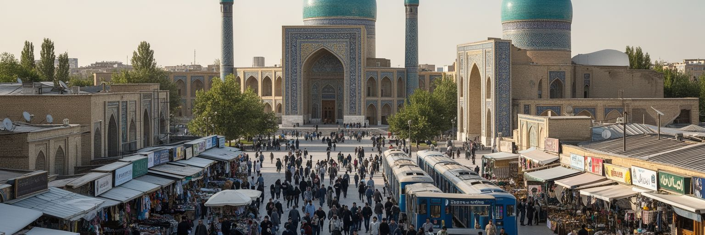
タシュケント観光は、サマルカンドやブハラのような世界遺産都市の前後に通過するだけではもったいない体験です。ハスト・イモム広場ではイスラム学問と宗教建築の記憶に触れ、チョルスー・バザールではナン、香辛料、乾果、布、日用品が混ざる首都の台所を歩けます。地下鉄駅は一つ一つが異なる装飾を持ち、ソ連期の公共芸術と独立後の都市生活を同時に見せます。アミール・ティムール広場、独立広場、劇場、博物館、応用美術館、テレビ塔、公園、現代的な商業地区を巡ると、旧市街、帝政期、ソ連期、独立後の層が見えてきます。食ではプロフ、シャシリク、ラグマン、サムサ、緑茶が旅の記憶を作ります。ただし、観光の見どころは名所だけではありません。朝の市場、地下鉄で通勤する人、集合住宅の中庭、結婚式場の賑わい、夕方の公園、ロシア語とウズベク語が交じる会話が、タシュケントらしさを伝えます。宗教施設では服装や写真撮影に配慮し、市場では相手の仕事を尊重する姿勢が大切です。都市の変化が速いため、古い町並みや市場の記憶は失われやすく、旅人の視線にも節度が求められます。タシュケントを歩く価値は、中央アジアの入口として便利なことだけではなく、地域の近代化、信仰、商い、交通、国家建設が一つの都市で読めることにあります。数日滞在すると、通過点ではない首都の厚みが見えてきます。
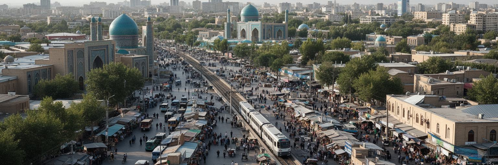
タシュケントを世界都市として読む意味は、経済規模だけにありません。ここには、中央アジアの内陸性、ソ連の遺産、独立国家の再編、イスラム文化、多民族社会、若い人口、改革経済、住宅開発、環境問題が濃く集まっています。高層ビルや投資フォーラムは新しい国の自信を示しますが、旧市街のマハッラ、バザールの小商い、地下鉄の装飾、集合住宅の中庭は、別の時間を保っています。都市の重要性は、国際会議の数やGDPだけでは測れません。地方から来た学生が学べるか、若者が安定した仕事を得られるか、古い地区の住民が開発で排除されないか、夏の暑さと冬の空気汚染から守られるか、宗教と多言語の生活が尊重されるかで見えてきます。タシュケントは、ロシア語圏、トルコ語圏、イスラム圏、中国へ向かう回廊、南アジアへの接点が重なる場所です。そのため、都市の日常には複数の方向へ開く緊張と可能性があります。旅人にとっては、シルクロードの名所へ向かう玄関口であり、住民にとっては仕事、教育、医療、行政、家族の未来を求める現実の都市です。タシュケントの核心は、過去を保存することと未来を作ることの間で、急速な変化をどう生活の質へ変えるかにあります。広い道路の整然さとバザールの混雑を同じ視線で見ると、中央アジアの首都が抱える力と課題が立体的に見えてきます。